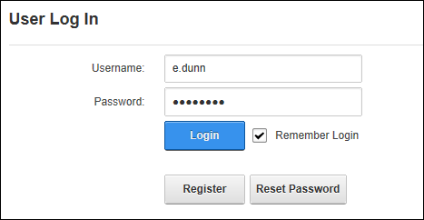

How to enable a site to remember your login credentials. Selecting the Remember Login will automatically log you into that site next time you visit it. This feature adds a cookie to your computer so it will not work on another computer. It is also site specific so it will not log you in to other sites within this DNN installation during the next 24 hours, at which time it will expire.

Tip: To exit a site, simply close your Web browser. If you click the Logout link you will need to login next time.